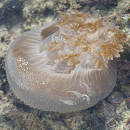
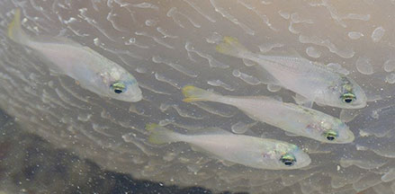

|
|
|
Jellyfish
Class Scyphozoa
updated
Aug 2025
if you
learn only 3 things about them ...
 They are not fish! They are not fish!
Many can sting. Don't touch jellyfish, even those stranded on the beach.
Sea turtles
eat jellyfishes and often mistake plastic bags for jellyfishes. Turtles can die from accidentally eating the bags. |
|
Where
seen? Almost everyone knows what a jellyfish looks like! These blobs of
jelly are creatures of the open waters and are only sometimes encountered
on the shores. In the water, these elegant creatures are a delight
to watch. Sometimes, they are trapped in a pool. More unluckily, they
are sometimes stranded on the shore and look like sorry heaps of jelly.
But no matter where you see them, don't touch them!
What are jellyfish? Despite their
name, they are not fish and are more closely related to sea anemones
and corals. They are Cnidarians (Phylum
Cnidaria).
Jellyfish may belong to various groups within the Phylum Cnidaria.
Many cnidarians undergo a life cycle in which they take a jellyfish-like
form (the medusa) in one stage, and a stationary sea anemone-like
form (the polyp) in another stage.
Other cnidarians only take the form of a jellyfish in their life cycle
and don't take on the stationary form. These include members of the
Class Scyphozoa; Class Cubozoa (which includes the highly venomous
box jellies); Class Hydrozoa (which includes the highly venomous Portuguese-Man-of-War in the Order
Siphonophora which is a colony and not a solitary animal like other
jellyfish). In Class Scyphozoa and Class Cubozoa, the jellyfish form
is the dominant and most conspicuous form in the life cycle.
Features: Jellyfish are more notable
for the features that they lack: no head, no organs, no bones. The
body called the bell is jelly-like, transparent or semi-transparent.
The body has eight-fold symmetry. Like other cnidarians, the jellyfish
does not have an anus and wastes are eliminated through the same opening
where food is taken in.
|

The Ribbon jellyfish has thin tentacles and thick ruffled long arms.
Terumbu Semakau, Mar 11 |

Terumbu Semakau, Mar 11 |
| The animal moves by contracting its bell. Some may have long thin
tentacles on the edge of the bell, others lack these. The mouth is
under the bell in the centre. Often surrounding the mouth are long
structures called oral arms (not tentacles). These can be short and
stout, branched, or long and ribbon-like. |
 |
Don't
play with jellyfish! Like other cnidarians,
jellyfish can sting and some, very painfully. In the water, a jellyfish is translucent and easily overlooked, until you brush against one of its stinging arms with bare skin.
Stingers
are still active even after the jellyfish is dead or dying.
So don't touch jellyfish, or bits of jellyfish, even if these are stranded on
the beach.
How to stay safe: Do not touch jellyfishes. Cover all skin if you have to work in water: long sleeves, long pants, covered shoes, gloves. |
|
What do they eat? Some jellyfish
sting fishes and crustaceans. Others are suspension feeders, trapping
plankton in mucus on the underside of their bell-shaped bodies. The Upsidedown jellyfishhas a farm in its arms - it harbours
microscopic, single-celled algae (called zooxanthellae) inside its
body. The algae undergo photosynthesis to produce food from sunlight.
The food produced is shared with the jellyfish, which in return provides
the algae with shelter and minerals.
Jellyfish babies: Most jellyfish
belonging to Class Scyphozoa and Class Cubozoa have of separate genders
and stay the same gender. The reproductive organs are in the stomach
and eggs and sperm are released through the mouth. Some species brood
fertilised eggs. In the first larval stage, the offspring looks like
a sausage and goes through a brief free-swimming stage. It eventually
attaches to a surface. It then changes form to become a polyp that
looks like a tiny sea anemone. Here, it feeds and grows. In the next
stage, the polyp changes form again, budding into several tiny bell-shaped
bodies that are stacked on top of each other like stacked cups. Each
tiny cup breaks away to form a tiny jellyfish. In some other species,
the polyp may bud off to form more polyps, and each polyp transforms
into only one jellyfish.
In some small jellyfish, these larvae eventually settle down and develop
into polyps that feed and grow. These polyps may reproduce asexually
by budding off more polyps. Eventually, the polyp may reproduce asexually
by budding off medusa forms. These medusa swim off and develop into
adults that may eventually reproduce sexually. The original polyp
may remain alive to produce medusa forms again later on.
Role in the habitat: Among the
creatures that eat jellyfish are sea turtles. Because plastic bags
and balloons look like jellyfish, sea turtles may eat them and eventually
become ill and/or die. This is why it is important to dispose of plastic
bags and balloons properly. Our litter can kill!
Jellyfish friends: Sometimes, small fishes can be seen near huge jellyfishes and even Ribbon jellyfishes including near their stinging tentacles. |

Pulau Jong,
Jun 16
Photo shared by Marcus Ng on facebook.
|

Small fishes
swimming near the jellyfish. |
Human uses: Jellyfish are a delicacy
in Chinese cuisine. But so far, there has not been an outcry against
harvesting them. Jellyfish themselves can become a threat. Introduced
jellyfish (through ballast water) can upset the natural balance by
out-competing native animals. Some jellyfish are seasonally abundant
and those that sting can be a danger to swimmers when they are plentiful.
A sudden increase in jellyfishes can also impair commercial fishing
as they clog up nets. Explosions of jellyfish populations are considered
to be an indicator of an imbalance in the ecosystem, or pollution.
Status: Except for the Mangrove jellyfish which is listed as Vulnerable, there is inadequate information as at 2024 to make an informed assesment of the conservation status of the recorded jellyfishes in Singapore. |
| Some jellyfishes on Singapore shores |
| Unidentified
jellyfishes on Singapore shores |
Class
Scyphozoa on Singapore Shores
from Checklist of Cnidaria (non-Sclerectinia) Species with their Category of Threat Status for Singapore by Yap Wei Liang Nicholas, Oh Ren Min, Iffah Iesa in G.W.H. Davidson, J.W.M. Gan, D. Huang, W.S. Hwang, S.K.Y. Lum, D.C.J. Yeo, May 2024. The Singapore Red Data Book: Threatened plants and animals of Singapore. 3rd edition. National Parks Board. 663 pp.
| |
Cassiopea andromeda (Upside-down jellyfish)
Cassiopea xamachana (Upside-down jellyfish) |
| |
Linuche unguiculata (Thimble jellyfish) |
| |
Cyanea lamarckii (Lion's Mane jellyfish) |
| |
Chrysaora sp. (Ribbon jellyfish)
Chrysaora chinensis
Chrysaora melanaster
Pelagia sp. (Purple-striped jellyfish)
Sanderia malayensis |
| |
Aurelia aurita (Moon jellyfish)
Ulmaris snelliusi |
| |
Cephea octostyla (Crown jellyfish) |
| |
Mastigias ocellatus (Golden jellyfish)
Mastigias papua
Mastigias sidereus (Golden jellyfish)
Phyllorhiza punctata (White-spotted jellyfish) |
| |
Thysanostoma sp. (Tiger jellyfish) |
|
Class
Cubuzoa on Singapore Shores
from Checklist of Cnidaria (non-Sclerectinia) Species with their Category of Threat Status for Singapore by Yap Wei Liang Nicholas, Oh Ren Min, Iffah Iesa in G.W.H. Davidson, J.W.M. Gan, D. Huang, W.S. Hwang, S.K.Y. Lum, D.C.J. Yeo, May 2024. The Singapore Red Data Book: Threatened plants and animals of Singapore. 3rd edition. National Parks Board. 663 pp.
| |
Morbakka sp. (Box jellyfish) |
| |
Chironex sp. (Multi-tentacled Box jellyfish) |
| |
Chiropsoides quadrigatus (Multi-tentacled Box jellyfish)
Chiropsella sp. (Multi-tentacled Box jellyfish) |
| |
Tripedalia cystophora (Mangrove Box jellyfish) |
Some jellyfishes are classified as Hydroids. |
Acknowlegement
With grateful thanks to Dr
Michael N Dawson of the University of California, Merced for identification
of the jellyfishes.
Links
References
- Checklist of Cnidaria (non-Sclerectinia) Species with their Category of Threat Status for Singapore by Yap Wei Liang Nicholas, Oh Ren Min, Iffah Iesa in G.W.H. Davidson, J.W.M. Gan, D. Huang, W.S. Hwang, S.K.Y. Lum, D.C.J. Yeo, May 2024. The Singapore Red Data Book: Threatened plants and animals of Singapore. 3rd edition. National Parks Board. 663 pp.
- Iffah Iesa, Chuan Chee Hoe & Nicholas Yap Wei Liang. 30 September 2020. New record of the jellyfish, Ulmaris snelliusi, in Singapore. Singapore Biodiversity Records 2020: 132-133. The National University of Singapore.
- Iffah Iesa & Nicholas Wei Liang Yap. Box jellyfish of the genus Morbakka in Singapore. 31 January 2018. Singapore Biodiversity Records 2018: 13-15 ISSN 2345-7597. National University of Singapore.
- Iffah Iesa. Mangrove box jellyfish, Tripedalia cystophora, in Singapore. 28 December 2017. Singapore Biodiversity Records 2017: 183 ISSN 2345-7597. National University of Singapore.
- Uwe Will & Iffah Iesa. River jellyfish, Acromitus hardenbergi, at Sungei Buloh. 30 November 2017. Singapore Biodiversity Records 2017: 156-157 ISSN 2345-7597. National University of Singapore.
- Wee Y.C.
and Peter K. L. Ng. 1994. A First Look at Biodiversity in Singapore.
National Council on the Environment. 163pp.
- Edward E.
Ruppert, Richard S. Fox, Robert D. Barnes. 2004.Invertebrate
Zoology
Brooks/Cole of Thomson Learning Inc., 7th Edition. pp. 963
- Pechenik,
Jan A., 2005. Biology
of the Invertebrates.
5th edition. McGraw-Hill Book Co., Singapore. 578 pp.
|
|
|